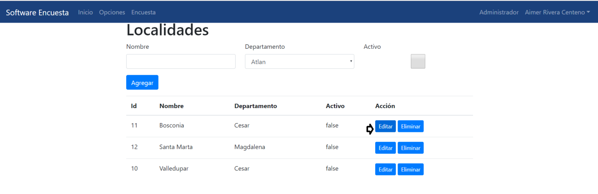

7.2. Localidades
Se encuentra ubicada en opciones, permite al usuario crear Localidades y asociarlas con departamentos. El usuario da clic sobre el módulo y le mostrará un formulario el cual requiere de ingresar
el campo Nombre, Departamento y seleccionar si se va a encontrar en estado Activo o no del nuevo registro localidad.
Es muy importante tener activos los registros que se hacen para que puedan tener movimientos más adelante si se necesitan con otros módulos.
Es muy importante tener activos los registros que se hacen para que puedan tener movimientos más adelante si se necesitan con otros módulos.
7.2.1. Agregar
Esta opción se encuentra ubicada en la barra horizontal superior, permite al usuario cuando ya tiene toda la información necesaria dar clic en la opión Agregar y el registro se guarde correctamente
y debe aparecer en el listado de localidades registrados en la aplicación. Requiere de un formulario solicitando información obligatoria en este caso es el campo nombre de la localidad.

Dar clic en el botón Agregar y se guarde correctamente el registro.
7.2.2. Editar
Esta función se encuentra ubicada en la barra horizontal, permite al usuario poder seleccionar un registro existen del listado de localidades, dar clic en la opcion Editar y hacerle modificación
al registro.

Seguidamente se escoge el campo que se va editar en este caso el nombre.
Posteriormente dar clic en el botón Editar y los cambios serán actualizados en la base de datos en el listado de localidades ya debe aparecer el nombre Bosco.
7.2.3. Eliminar
Esta funcionalidad se encuentra ubicada en la barra horizontal, permite al usuario eliminar localidad que no le existan movimientos de lo contrario le mostrará un mensaje de error y no dejará eliminar el registro. Porque localidades va asociado a departamento
es decir mientras que a ese departamento tenga asociados varias localidades no se puede eliminar la localidad.
Clic en la opcion Eliminar y se visualizará el formulario de localidades del registro seleccionado con otros 2 botones para seguir el proceso eliminación o el proceso de cancelar esta funcionalidad.
En este caso permite eliminar el registro porque la localidad la paz no le existen movimientos dentro del aplicativo. El usuario visualizará que el registro no aparece en el listado de localidades registradas en el aplicativo.